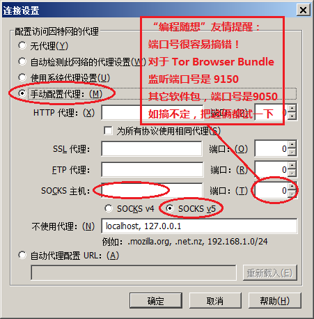
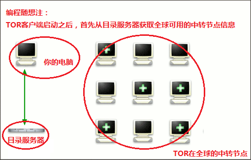
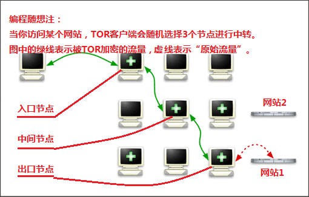
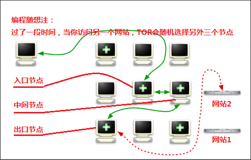

Tor 是一个很老牌的翻墙工具，也是俺在博客中推荐的第一款翻墙工具——当时正赶上朝廷的60大寿，GFW 加强封锁，俺就写了一篇《“如何翻墙”系列：戴“套”翻墻的方法》，算是 Tor 的入门教程。
许多年过去了，翻墙工具日新月异，而 Tor 的影响力与用户数始终持续增长——很多人不仅仅是用 Tor 来翻墙，更是用 Tor 来隐匿自己的上网行踪。在这期间，俺也收到很多读者来信/博客留言，询问关于 Tor 的各种问题。甚至有热心读者建议俺专门写一篇博文，聊聊 Tor 的高级话题。
为了帮大伙儿更好地使用 Tor，今天发一篇教程（FAQ），解答 Tor 的各种常见问题。

Tor 是洋文（The Onion Router）的缩写，中文又称作“洋葱网络 or 洋葱路由”。简单来说，这是一款专门设计用于【隐匿上网身份】的工具。
Tor 的官网在“这里”。关于 Tor 的更详细介绍，请看维基百科的“这里”。
前面说了，设计 Tor 的主要目的是为了上网隐匿身份。所以，跟其它的翻墙工具不同——它的重点功能是【隐匿性】，“翻墙”只是它顺带的功能。
具有如下特点的用户，可以考虑使用 Tor。
比如有些视频网站为了版权的原因，会限制某些国家的IP，那么你可以利用 Tor 来伪装成别国的网民，就可以绕过视频网站的版权限制。
比如你想在网上发布敏感的政治言论，那隐匿公网 IP 是避免被跨省追捕的【必要条件】。
（提醒一下：“隐匿公网 IP”只是必要条件，不是充分条件！要避免被跨省，需要考虑多个层面的防范，具体请看《如何隐藏你的踪迹，避免跨省追捕》系列博文）。
像俺这种长期抹黑朝廷的博主，Tor 是上网的必备工具。俺即使访问国内网站，也要走“基于 Tor 的多重代理”。（关于“多重代理”，后面还会提到）
刚才已经说了 Tor 的特点，在隐私保护方面，Tor 优于其它的翻墙工具。为了说明 Tor 在隐私方面的优点，拿 Tor 跟 VPN 做一个对比。
很多网友使用 VPN 翻墙，而且长期使用固定的 VPN 提供商。万一 VPN 提供商在 VPN 服务器上记录你的上网行为，【你所有的上网行踪】就都暴露无遗。
反之，如果使用 Tor，则可以大大降低这种风险——具体原因，下面会聊。
先说明一下：Tor 是跨平台滴，同时支持主流的：Windows、Linux、Mac OS、Android ......
在 Tor 官网有两个下载页面，分别如下：
https://www.torproject.org/download/
（这个是面向【菜鸟】用户滴）
https://www.torproject.org/download/tor/
（这个是面向【高级】用户滴，该界面上还包括源代码下载）
对于 Tor 官网提供的多种软件包，俺稍微解释一下：
Tor Browser Bundle（简称“TBB”）
这个软件包捆绑了 Firefox 浏览器（注：对于 Tor 2.3.25 之后的版本，其 SOCKS 代理的默认监听端口改为
Expert Bundle
这个软件包面向高级用户，只有赤裸裸的 Tor，没有其它额外的东西（没有图形界面）。
Bridge Bundle ＆ Relay Bundle
以前 Tor 官网上有提供这2种软件包的下载，如今已经不提供了。前者专门用来搭建“Tor 网桥”，后者专门用来搭建“Tor 中继”（Tor 中转节点）。
顺便说一下：Bridge 与 Relay 有啥区别。
Bridge（网桥）是一种特殊的 Relay。它跟其它 Relay 的差异在于：普通 Relay 的节点信息会被加入到 Tor 在全球的目录服务器，所以普通的 Relay 节点会被所有的人看到，并用来进行流量中转。
而你自己搭建的 Bridge，其信息默认【不】加入到 Tor 网络的目录服务器。只要你不公开，就只会被你自己所用。
因为 Tor 的名气大，那些主流的发行版基本上都提供 Tor 相关的软件包。如果你用的是主流的发行版，直接用系统的软件包管理工具，就可以自动安装/自动升级 Tor。
使用苹果系统的用户，可以看官网的”这个文档“。里面有介绍如何通过“Homebrew 包管理器”安装 Tor。
由于 Tor 官网早就被 GFW 封杀了。在封锁严厉的时期，假如你手头【没有】其它翻墙工具，又想得到 Tor，咋办捏？
可以参考俺在 2009 年写的入门教程《“如何翻墙”系列：戴“套”翻墻的方法》，其中提到了——通过【电子邮件】的方式获得 Tor 安装包。
Tor 本身只提供命令行界面，【没有】图形界面。Vidalia 是专门为 Tor 量身打造的图形界面。
在 Vidalia 的图形化界面上，你不但可以配置各项参数，还可以监控 Tor 的流量和 Tor 的线路。
补充说明：
从2014年之后，Tor 社区已经【不再】维护 Vidalia 这个软件了。所以俺后来又写了一篇：《扫盲 Arm——Tor 的界面前端（替代已死亡的 Vidalia）》
（如果你使用的是 Tor Browser Bundle 内置的 Firefox，就无需再额外配置浏览器代理了）
早先的 Tor 客户端同时提供 HTTP 代理和 SOCKS，大概从 2013年开始，新版本的客户端不再提供 HTTP 代理了。所以原先的
今后大伙儿需要用 Tor 提供的 SOCKS 代理来上网，端口号如下：
Firefox 的代理设置如下图（至于 Chrome、IE、或其它浏览器，列位看官请依样画葫芦）：

（顺便说一下：SOCKS 代理其实比 HTTP 代理更好，关于两者的差别，俺抽空写一篇扫盲）
Tor 官网提供了一个测试界面，网址是 https://check.torproject.org/ 猛击该超链接，会打开一个界面。
如果你的浏览器已经在使用 Tor 的线路，会出现一个【绿色】洋葱头，以及一行绿色的洋文提示。
如果你的浏览器没有走 Tor 的线路，会出现一个【带红色打叉】的洋葱头，同时还有一行红色的洋文警告。
这个 TBB 内置的 Firefox 跟普通的 Firefox 有如下几个差异：
1. 版本差异
这个内置的 Firefox 采用 Mozilla 官方提供的长期支持版本（洋文叫 ESR），而不是最新版本。
因为最新版本总是会增加很多新功能，可能会引入潜在的安全漏洞；而 ESR版本 相对而言比较稳健。
关于 Firefox 不同版本的安全性对比，可以参见如下博文：
《基于安全性考虑，如何选择及切换 Firefox 版本？》
2. 配置差异
这个内置的 Firefox 专门进行了一些安全方面的定制，以保护隐私（比如：尽量消除“浏览器指纹”）
这一节是本文的重点，看仔细喽。
如果你比较好奇，为啥 Tor 的隐匿保护好于其它翻墙工具？那么有必要了解一下 Tor 客户端的联网机制。下面这三张图来自 Tor 的官网。因为图片中是洋文说明，俺稍微修改了一下，注上中文。
 第1图：当 Tor 客户端启动之后，会首先连接 Tor 的目录服务器。从目录服务器中获取全球的 Tor 节点信息。
 第2图：假设你要访问 网站1，那么 Tor 客户端会随机挑选三个节点用于中转。
为了打字方便，俺把这三个节点分别称为：
入口节点：
如果你仅仅使用 Tor 联网，该节点直接跟你的电脑相连；如果你使用双重代理，入口节点跟你的前置代理相连。
中间节点：
介于入口节点和出口节点之间（这个节点的威胁最小）。
出口节点：
该节点直接跟你访问的目标网站相连（这个节点的威胁最大）。
这三个节点中，只有“出口节点”会看到你的“上网行为”（图中标红色的虚线，表示 Tor 节点【会看到】“原始流量”）。
所谓的“上网行为”包括：你访问了哪个网站，你从该网站传输的流量。
如果这个网站使用【加密的】HTTPS 协议，“出口节点”看到的“原始流量”是 HTTPS 的密文，没啥关系；反之，如果这个网站使用【明文的】HTTP 协议，那么"出口节点"会看到你从该网站发送/接受的内容（这是主要风险点）。
除了“出口节点”，其它节点完全无法知道你的上网行为（图中标绿色的线，表示 Tor 节点看不到“原始流量”）。
 第3图：Tor 为了加强隐匿性，会动态变化中转线路。也就是说，每隔一段时间（约10分钟），就会随机挑选三个节点，重新构造一条传输线路。
因为线路动态变化，“出口节点”自然也动态变化。所以，即使“出口节点”偷窥你的上网行为，也只能看到一个短暂的片段。
如果你弄懂了前一个问题的三张原理图，那你自然就知道——只有【出口节点】会看到你的上网行为。
前面说了，“上网行为”至少包括两部分：
1. 你访问了哪个网站
2. 你从网站传输（发送、接受）的内容/数据
对于第1点，是【无解】滴！
不管采用哪种工具来隐匿行踪，最终，你都需要有某个“主机”帮你把数据送到你要访问的网站。所以，这个“主机”必然就知道你访问了啥网站。
对于第2点，是【有解】滴。
主要方法就是：尽量采用 HTTPS 协议。比如像维基百科，同时支持 HTTP 和 HTTPS。那么你就应该采用 HTTPS 方式访问。这种情况下，Tor 的“出口节点”只知道你访问了维基百科，但是无法知道你访问了哪个页面。
为了养成经常使用 HTTPS 的习惯，建议大伙儿安装 EFF 官方提供的 HTTPS everywhere
虚拟机是为了进行网络隔离，确保你本机的软件总是经过代理联网，而不会直接联网——直接联网可能会导致你的公网 IP 暴露。
具体的原理图，请看《如何隐藏你的踪迹，避免跨省追捕[6]：用虚拟机隐匿公网 IP（原理介绍）》
某些国家（比如咱们天朝）的政府会设置“蜜罐节点”。所谓的“蜜罐节点”，通俗的说，就是陷阱。
如果你使用的线路中，【出口节点】正好是蜜罐，那么该蜜罐就会窥探到你的上网行为——前面已经说了，【出口节点】肯定会知道：你的访问了哪个网站。
更糟糕的是——假如你访问的目标网站【没有】HTTPS 加密，充当“出口节点”的蜜罐就会知道：你浏览的页面的内容。
比较简单的做法，就是通过修改 Tor 的配置文件，规避这些不安全国家的节点。
对于天朝的网友，你至少需要屏蔽“大陆、香港、澳门”这三个节点。因为这三个地区都可能被六扇门设置蜜罐。
Tor 的配置文件名叫
在该文件末尾，加入下面这行（
如果不设置
如果设置了
除了上述三个地区，还有几个国家跟天朝串通一气。如果你对安全性的要求比较高，可以把这些国家也列入 Tor 的排除节点列表。
下面给出这些流氓国家的代码，你依样画葫芦加入到
在本文发布之后6年（2019），俺在《近期安全动态和点评（2019年3季度）》一文中介绍了【更严格】的 Tor 节点配置招数。对安全性要求【很高】的读者，可以去看看。
那篇提到了三个招数（3个注意事项），其中一个是【白名单】，配置语法如下：
限定只使用某些国家的节点作为【入口节点】。
限定只使用某些国家的节点作为【出口节点】。
根据斯诺登曝光的材料，NSA 目前具备的运算能力，可以解密很大一部分 Tor 流量。
因为目前（2013年）的 Tor 中继服务器，大部分还在使用 1024 位的 DHE 密钥，这类密钥虽然普通人难以破解，但是 NSA 掌握的运算能力可以在几小时内暴力破解。目前只有 10% 左右的中继服务器采用 ECDHE 密钥（基于椭圆曲线）。这类 ECDHE 密钥 NSA 比较难破解（更多介绍请看“这篇报道”）。
至于天朝方面，肯定【没有】NSA 这么牛的破解能力。所以墙内的同学们，咱们暂时还不用担心这个问题 :)
另外，等到大部分中继服务器升级到 2.4 版本，ECDHE密钥 的使用就会普及。到那时候，（DHE 密钥被破解的）风险会减低。
注：
本小节提及了好几种【密钥交换算法】。如果你对这方面感兴趣，可以看如下这篇博文，介绍了相关算法的原理。
《扫盲 HTTPS 和 SSL/TLS 协议[3]：密钥交换（密钥协商）算法及其原理》
先声明：流量关联分析有很多种。这里说的是【针对 Tor】的流量关联分析”。
“关联分析”是数据挖掘的一种手段——先积累足够多的数据，然后通过某种算法找出数据之间的某些相关性特征。考虑到数据挖掘不是本文的主题，就不深入介绍了。
简单而言，如果某个攻击者能够监控你接入 Tor 网络的流量（入口节点之前的流量）以及你离开 Tor 网络的流量（出口节点之后的流量）。那么经过足够长时间的数据积累，攻击者就可以利用数据挖据【猜测】出：某些网络行为其实是来自某个公网 IP 的用户。
要规避“针对 Tor 的流量关联分析”，目前最直接有效的方法是：多重代理。因为一旦用了多重代理，Tor 的流量类型就被掩盖掉了。
比方说：如果你使用 VPN 作为 Tor 的前置代理（Tor over VPN），那么你的 ISP 监控你的流量，看到的是 VPN 流量——（因为 VPN 是加密滴）ISP【看不到】你的 Tor 流量。在这种情况下，“流量关联分析”的【难度】将提高 N 个数量级。
除了“针对 Tor 的流量关联分析”，还有其它的流量分析技术。考虑到篇幅，就不深入介绍了。等俺有空，单独写一篇博文，专门聊这个话题。
参见如下教程。其中有一个章节是
《如何用 Tor 访问对 Tor 不友好的网站——扫盲“三重代理”及其它招数》
参见如下教程，其中介绍了5种解决办法，分别应对不同的情况。
《如何用 Tor 访问对 Tor 不友好的网站——扫盲“三重代理”及其它招数》
因为 TBB 内置的浏览器【没】装 Flash 播放插件。
如果你访问的视频网站需要靠 Flash 插件来播放视频，用 TBB 就看不了视频。
所谓的“双重代理”，就是让 Tor 借助另一个翻墙工具联网。帮助 Tor 联网的那个翻墙工具，称之为“Tor 的前置代理”。
如果你对“双重代理”还不太了解，请先看俺之前的博文《如何隐藏你的踪迹，避免跨省追捕[5]：用多重代理隐匿公网 IP》。
俺总结了如下几个原因：
原因1
因为 Tor 的影响力很大，GFW 对 Tor 进行重点封杀。全球大多数的 Tor 中继节点都被 GFW 列入“IP 黑名单”。所以天朝的网友，如果单独使用 Tor，很难联网成功。这种情况下，就需要使用双重代理。
（注：在2014年，Tor 社区研发了【meek 插件】，使得 Tor 可以直接突破 GFW 的封锁。从那之后，Tor【不】依赖前置代理也可以独立联网，这个理由就不那么重要了。重点看后面几个原因）
原因2
所有的软件都可能有缺陷（Tor 也不例外）。如果你仅仅使用 Tor，万一 Tor 出现安全漏洞并且被攻击者利用，那么攻击者就有可能破解 Tor 流量的加密，从而对你进行逆向追溯（从“出口节点”逆向追踪到“入口节点”）。
而如果使用多重代理，即使出现上述风险，攻击者最多也只能追踪到“你使用的前置代理的服务器”，而【不会】直接追踪到你本人的真实公网 IP。这样一来，风险大大降低。
原因3
当你给 Tor 配置了（加密的）前置代理，一旦你的运营商监控你的网络流量，看到的是【前置代理】的加密流量，也就【无法】知道你在使用 Tor。
对于那些非常看重安全性（隐匿性）的同学，你既要使用匿名网络（Tor 或 I2P），又【不能】让别人（政府/警方）知道你在使用匿名网络。
原因4
前面提到，全球的 Tor 网络中可能会有【陷阱节点/蜜罐节点】。虽然你可以利用俺刚才介绍的方法，排除危险国家/地区的节点，但并【不能】完全确保万无一失。
比如说你碰到某个极小概率事件——你使用的线路上，碰巧三个节点都是陷阱——这种情况下，你的真实公网 IP 会暴露。
而当你用了双重代理，即使碰到这种小概率事件，只会暴露你使用的前置代理服务器的 IP，而【不会暴露】你的本人的公网 IP。
原因5
前面章节提到了针对 Tor 的“流量关联分析”。如果你使用双重代理，会降低被关联分析的风险。
大部分翻墙工具都可以跟 Tor 组合。比如：所有的 VPN，无界、自由门、赛风、世界通、等等。
另外，你也可以使用公网上的一些代理服务器（公共代理），用来跟 Tor 组合成双重代理。前提是：这些“公共代理”【必须支持】HTTPS 代理或 SOCKS 代理。
如何用 Tor 组合“公共代理”，请看《2012年9月翻墙快报（兼谈复活 Tor 的方法）》。
貌似 GAE 的翻墙工具，都只提供 HTTP 代理，没有提供【原生的】HTTPS 代理。而 Tor 客户端需要使用 HTTPS 跟中转节点进行数据传输。
GoAgent 也是 GAE 翻墙工具的一种，请参见前一个问题的解答。
用记事本（notepad）打开 Tor 的配置文件（如何找到配置文件，本文前面提到过）。在该文件末尾新增一行。
如果是 Tor Browser 软件包，加入如下这行
（唠叨一下：如果要跨机器共享 Tor 的 SOCKS 端口，别忘了修改防火墙的配置，允许 Tor 监听端口的 TCP 连入）
这玩意儿也是 Tor 官方提供的工具，主要是用来混淆 Tor 的流量。
因为 Tor 的名气太大了，很多网络监控系统（比如天朝大名鼎鼎的 GFW）可以根据网络传输内容，判断该流量是否为 Tor 的流量。如果是 Tor 流量就进行阻断。
（请注意：“判断流量类型”【不等于】“解密内容”）。
为了应对这类威胁，Tor 官方提供了一个额外的工具，用来混淆流量，让监控系统识别不出。原理图如下：

虽然有 obfsproxy 这个工具，但是对于那些非常重视安全性的网友，俺依然提倡用“双重代理”——双重代理的优点刚才分析过，此处不再罗嗦。
本 FAQ 涉及的问题未必覆盖到方方面面。如果你觉得本文还有哪些问题没有覆盖到，欢迎到俺博客留言。
俺博客上，和本文相关的帖子（需翻墙）：
《如何翻墙》（传说中的翻墙入门教程，不定期更新）
《戴“套”翻墻的方法》
《“如何翻墙”系列：扫盲 Tor Browser 7.5——关于 meek 插件的配置、优化、原理》
《扫盲 Arm——Tor 的界面前端（替代已死亡的 Vidalia）》
《如何用 Tor 访问对 Tor 不友好的网站——扫盲“三重代理”及其它招数》
《如何隐藏你的踪迹，避免跨省追捕》（系列）
《扫盲操作系统虚拟机》（系列）
《多台电脑如何【共享】翻墙通道——兼谈【端口转发】的几种方法》
许多年过去了，翻墙工具日新月异，而 Tor 的影响力与用户数始终持续增长——很多人不仅仅是用 Tor 来翻墙，更是用 Tor 来隐匿自己的上网行踪。在这期间，俺也收到很多读者来信/博客留言，询问关于 Tor 的各种问题。甚至有热心读者建议俺专门写一篇博文，聊聊 Tor 的高级话题。
为了帮大伙儿更好地使用 Tor，今天发一篇教程（FAQ），解答 Tor 的各种常见问题。
★Tor 是啥玩意儿？
Tor 是洋文（The Onion Router）的缩写，中文又称作“洋葱网络 or 洋葱路由”。简单来说，这是一款专门设计用于【隐匿上网身份】的工具。
Tor 的官网在“这里”。关于 Tor 的更详细介绍，请看维基百科的“这里”。
★哪些网友需要使用 Tor？
前面说了，设计 Tor 的主要目的是为了上网隐匿身份。所以，跟其它的翻墙工具不同——它的重点功能是【隐匿性】，“翻墙”只是它顺带的功能。
具有如下特点的用户，可以考虑使用 Tor。
◇为了隐匿自己所在的国家
比如有些视频网站为了版权的原因，会限制某些国家的IP，那么你可以利用 Tor 来伪装成别国的网民，就可以绕过视频网站的版权限制。
◇为了隐匿自己的公网 IP
比如你想在网上发布敏感的政治言论，那隐匿公网 IP 是避免被跨省追捕的【必要条件】。
（提醒一下：“隐匿公网 IP”只是必要条件，不是充分条件！要避免被跨省，需要考虑多个层面的防范，具体请看《如何隐藏你的踪迹，避免跨省追捕》系列博文）。
像俺这种长期抹黑朝廷的博主，Tor 是上网的必备工具。俺即使访问国内网站，也要走“基于 Tor 的多重代理”。（关于“多重代理”，后面还会提到）
◇为了保护隐私
刚才已经说了 Tor 的特点，在隐私保护方面，Tor 优于其它的翻墙工具。为了说明 Tor 在隐私方面的优点，拿 Tor 跟 VPN 做一个对比。
很多网友使用 VPN 翻墙，而且长期使用固定的 VPN 提供商。万一 VPN 提供商在 VPN 服务器上记录你的上网行为，【你所有的上网行踪】就都暴露无遗。
反之，如果使用 Tor，则可以大大降低这种风险——具体原因，下面会聊。
★【软件安装】相关的问题
◇应该选择哪个安装包？
先说明一下：Tor 是跨平台滴，同时支持主流的：Windows、Linux、Mac OS、Android ......
在 Tor 官网有两个下载页面，分别如下：
https://www.torproject.org/download/
（这个是面向【菜鸟】用户滴）
https://www.torproject.org/download/tor/
（这个是面向【高级】用户滴，该界面上还包括源代码下载）
对于 Tor 官网提供的多种软件包，俺稍微解释一下：
Tor Browser Bundle（简称“TBB”）
这个软件包捆绑了 Firefox 浏览器（注：对于 Tor 2.3.25 之后的版本，其 SOCKS 代理的默认监听端口改为
9150）。Expert Bundle
这个软件包面向高级用户，只有赤裸裸的 Tor，没有其它额外的东西（没有图形界面）。
Bridge Bundle ＆ Relay Bundle
以前 Tor 官网上有提供这2种软件包的下载，如今已经不提供了。前者专门用来搭建“Tor 网桥”，后者专门用来搭建“Tor 中继”（Tor 中转节点）。
顺便说一下：Bridge 与 Relay 有啥区别。
Bridge（网桥）是一种特殊的 Relay。它跟其它 Relay 的差异在于：普通 Relay 的节点信息会被加入到 Tor 在全球的目录服务器，所以普通的 Relay 节点会被所有的人看到，并用来进行流量中转。
而你自己搭建的 Bridge，其信息默认【不】加入到 Tor 网络的目录服务器。只要你不公开，就只会被你自己所用。
◇Linux 用户如何获取软件包？
因为 Tor 的名气大，那些主流的发行版基本上都提供 Tor 相关的软件包。如果你用的是主流的发行版，直接用系统的软件包管理工具，就可以自动安装/自动升级 Tor。
◇Mac OS X 用户如何获取软件包？
使用苹果系统的用户，可以看官网的”这个文档“。里面有介绍如何通过“Homebrew 包管理器”安装 Tor。
◇如何【不翻墙】获取 Tor 的软件包？
由于 Tor 官网早就被 GFW 封杀了。在封锁严厉的时期，假如你手头【没有】其它翻墙工具，又想得到 Tor，咋办捏？
可以参考俺在 2009 年写的入门教程《“如何翻墙”系列：戴“套”翻墻的方法》，其中提到了——通过【电子邮件】的方式获得 Tor 安装包。
◇Vidalia 跟 Tor 是啥关系？
Tor 本身只提供命令行界面，【没有】图形界面。Vidalia 是专门为 Tor 量身打造的图形界面。
在 Vidalia 的图形化界面上，你不但可以配置各项参数，还可以监控 Tor 的流量和 Tor 的线路。
补充说明：
从2014年之后，Tor 社区已经【不再】维护 Vidalia 这个软件了。所以俺后来又写了一篇：《扫盲 Arm——Tor 的界面前端（替代已死亡的 Vidalia）》
★【浏览器】相关的问题
◇如何配置浏览器的代理？
（如果你使用的是 Tor Browser Bundle 内置的 Firefox，就无需再额外配置浏览器代理了）
早先的 Tor 客户端同时提供 HTTP 代理和 SOCKS，大概从 2013年开始，新版本的客户端不再提供 HTTP 代理了。所以原先的
8118 代理端口也就废弃了。今后大伙儿需要用 Tor 提供的 SOCKS 代理来上网，端口号如下：
9150（2.3.25版本之后的 Tor Browser Bundle 软件包）9050（其它的软件包）Firefox 的代理设置如下图（至于 Chrome、IE、或其它浏览器，列位看官请依样画葫芦）：
（顺便说一下：SOCKS 代理其实比 HTTP 代理更好，关于两者的差别，俺抽空写一篇扫盲）
◇如何判断自己的浏览器是否在走 Tor 的线路？
Tor 官网提供了一个测试界面，网址是 https://check.torproject.org/ 猛击该超链接，会打开一个界面。
如果你的浏览器已经在使用 Tor 的线路，会出现一个【绿色】洋葱头，以及一行绿色的洋文提示。
如果你的浏览器没有走 Tor 的线路，会出现一个【带红色打叉】的洋葱头，同时还有一行红色的洋文警告。
◇Tor Browser Bundle（TBB）内置的 Firefox，有啥特殊之处？
这个 TBB 内置的 Firefox 跟普通的 Firefox 有如下几个差异：
1. 版本差异
这个内置的 Firefox 采用 Mozilla 官方提供的长期支持版本（洋文叫 ESR），而不是最新版本。
因为最新版本总是会增加很多新功能，可能会引入潜在的安全漏洞；而 ESR版本 相对而言比较稳健。
关于 Firefox 不同版本的安全性对比，可以参见如下博文：
《基于安全性考虑，如何选择及切换 Firefox 版本？》
2. 配置差异
这个内置的 Firefox 专门进行了一些安全方面的定制，以保护隐私（比如：尽量消除“浏览器指纹”）
★【隐私】相关的问题
这一节是本文的重点，看仔细喽。
◇Tor 客户端如何建立联网的线路？
如果你比较好奇，为啥 Tor 的隐匿保护好于其它翻墙工具？那么有必要了解一下 Tor 客户端的联网机制。下面这三张图来自 Tor 的官网。因为图片中是洋文说明，俺稍微修改了一下，注上中文。
为了打字方便，俺把这三个节点分别称为：
入口节点：
如果你仅仅使用 Tor 联网，该节点直接跟你的电脑相连；如果你使用双重代理，入口节点跟你的前置代理相连。
中间节点：
介于入口节点和出口节点之间（这个节点的威胁最小）。
出口节点：
该节点直接跟你访问的目标网站相连（这个节点的威胁最大）。
这三个节点中，只有“出口节点”会看到你的“上网行为”（图中标红色的虚线，表示 Tor 节点【会看到】“原始流量”）。
所谓的“上网行为”包括：你访问了哪个网站，你从该网站传输的流量。
如果这个网站使用【加密的】HTTPS 协议，“出口节点”看到的“原始流量”是 HTTPS 的密文，没啥关系；反之，如果这个网站使用【明文的】HTTP 协议，那么"出口节点"会看到你从该网站发送/接受的内容（这是主要风险点）。
除了“出口节点”，其它节点完全无法知道你的上网行为（图中标绿色的线，表示 Tor 节点看不到“原始流量”）。
因为线路动态变化，“出口节点”自然也动态变化。所以，即使“出口节点”偷窥你的上网行为，也只能看到一个短暂的片段。
◇Tor 节点是否会偷窥到自己的隐私/上网行为？
如果你弄懂了前一个问题的三张原理图，那你自然就知道——只有【出口节点】会看到你的上网行为。
◇如何避免 Tor 节点看到你的上网行为？
前面说了，“上网行为”至少包括两部分：
1. 你访问了哪个网站
2. 你从网站传输（发送、接受）的内容/数据
对于第1点，是【无解】滴！
不管采用哪种工具来隐匿行踪，最终，你都需要有某个“主机”帮你把数据送到你要访问的网站。所以，这个“主机”必然就知道你访问了啥网站。
对于第2点，是【有解】滴。
主要方法就是：尽量采用 HTTPS 协议。比如像维基百科，同时支持 HTTP 和 HTTPS。那么你就应该采用 HTTPS 方式访问。这种情况下，Tor 的“出口节点”只知道你访问了维基百科，但是无法知道你访问了哪个页面。
为了养成经常使用 HTTPS 的习惯，建议大伙儿安装 EFF 官方提供的 HTTPS everywhere
◇为啥要使用虚拟机？
虚拟机是为了进行网络隔离，确保你本机的软件总是经过代理联网，而不会直接联网——直接联网可能会导致你的公网 IP 暴露。
具体的原理图，请看《如何隐藏你的踪迹，避免跨省追捕[6]：用虚拟机隐匿公网 IP（原理介绍）》
举例——FBI 如何定位 Tor 用户的真实公网 IP如果你之前没用过操作系统虚拟机，可以先看俺写的系列教程《扫盲操作系统虚拟机》。
前几个月（2013年9月），美国 FBI 为了打击儿童色情，逮捕了 Tor 匿名托管服务 Freedom Hosting 的负责人。然后 FBI 在该服务器上设置了木马。
该木马会利用 Tor 内置的 Firefox 浏览器的一个安全漏洞，来收集 Tor 用户的真实公网 IP。具体做法是：木马以【直连方式】向 FBI 的服务器发送一个信息，FBI 的服务器每次都会记录下【发送端的 IP】。如果 Tor 用户【没】用虚拟机隔离，这个【直接联网】的企图就得逞啦！
◇啥是“陷阱节点/蜜罐节点”？
某些国家（比如咱们天朝）的政府会设置“蜜罐节点”。所谓的“蜜罐节点”，通俗的说，就是陷阱。
如果你使用的线路中，【出口节点】正好是蜜罐，那么该蜜罐就会窥探到你的上网行为——前面已经说了，【出口节点】肯定会知道：你的访问了哪个网站。
更糟糕的是——假如你访问的目标网站【没有】HTTPS 加密，充当“出口节点”的蜜罐就会知道：你浏览的页面的内容。
◇如何避免“陷阱节点”/“蜜罐节点”？
比较简单的做法，就是通过修改 Tor 的配置文件，规避这些不安全国家的节点。
对于天朝的网友，你至少需要屏蔽“大陆、香港、澳门”这三个节点。因为这三个地区都可能被六扇门设置蜜罐。
Tor 的配置文件名叫
torrc，这是一个文本文件，用记事本就可以打开。（如果你找不到该文件，在系统盘中搜索一下 torrc 这个文件名）在该文件末尾，加入下面这行（
ExcludeNodes 表示排除这些国家/地区的节点，StrictNodes 表示强制执行）。ExcludeNodes {cn},{hk},{mo}
StrictNodes 1 关于【StrictNodes】的语法，俺补充说明一下：如果不设置
StrictNodes 1，Tor 客户端首先也会规避 ExcludeNodes 列出的这些国家。但如果 Tor 客户端找不到可用的线路，就会去尝试位于排除列表中的节点。如果设置了
StrictNodes 1，即使 Tor 客户端找不到可用的线路，也不会去尝试这些国家的节点。除了上述三个地区，还有几个国家跟天朝串通一气。如果你对安全性的要求比较高，可以把这些国家也列入 Tor 的排除节点列表。
下面给出这些流氓国家的代码，你依样画葫芦加入到
ExcludeNodes 那一行，国家代码之间用逗号分隔。| 代码 | 国别 |
|---|---|
| {kp} | 北朝鲜 |
| {ir} | 伊朗 |
| {sy} | 叙利亚 |
| {pk} | 巴基斯坦 |
| {cu} | 古巴 |
| {vn} | 越南 |
| {ru} | 俄罗斯 |
| {by} | 白俄罗斯 |
◇如何【更严格地】限制“Tor 节点”？
在本文发布之后6年（2019），俺在《近期安全动态和点评（2019年3季度）》一文中介绍了【更严格】的 Tor 节点配置招数。对安全性要求【很高】的读者，可以去看看。
那篇提到了三个招数（3个注意事项），其中一个是【白名单】，配置语法如下：
EntryNodes限定只使用某些国家的节点作为【入口节点】。
ExitNodes限定只使用某些国家的节点作为【出口节点】。
◇Tor 的加密流量能否被【破解】？
根据斯诺登曝光的材料，NSA 目前具备的运算能力，可以解密很大一部分 Tor 流量。
因为目前（2013年）的 Tor 中继服务器，大部分还在使用 1024 位的 DHE 密钥，这类密钥虽然普通人难以破解，但是 NSA 掌握的运算能力可以在几小时内暴力破解。目前只有 10% 左右的中继服务器采用 ECDHE 密钥（基于椭圆曲线）。这类 ECDHE 密钥 NSA 比较难破解（更多介绍请看“这篇报道”）。
至于天朝方面，肯定【没有】NSA 这么牛的破解能力。所以墙内的同学们，咱们暂时还不用担心这个问题 :)
另外，等到大部分中继服务器升级到 2.4 版本，ECDHE密钥 的使用就会普及。到那时候，（DHE 密钥被破解的）风险会减低。
注：
本小节提及了好几种【密钥交换算法】。如果你对这方面感兴趣，可以看如下这篇博文，介绍了相关算法的原理。
《扫盲 HTTPS 和 SSL/TLS 协议[3]：密钥交换（密钥协商）算法及其原理》
◇啥是【流量关联分析】？
先声明：流量关联分析有很多种。这里说的是【针对 Tor】的流量关联分析”。
“关联分析”是数据挖掘的一种手段——先积累足够多的数据，然后通过某种算法找出数据之间的某些相关性特征。考虑到数据挖掘不是本文的主题，就不深入介绍了。
简单而言，如果某个攻击者能够监控你接入 Tor 网络的流量（入口节点之前的流量）以及你离开 Tor 网络的流量（出口节点之后的流量）。那么经过足够长时间的数据积累，攻击者就可以利用数据挖据【猜测】出：某些网络行为其实是来自某个公网 IP 的用户。
举例——流量关联分析
如果你仅仅使用 Tor（没用双重代理）联网，然后经常到 A网站 发敏感言论。
假设1：
如果 GFW 对所有的 Tor 流量都做了记录（这只是假设，到底有没有，俺不晓得）
假设2：
A网站 对所有的用户留言做了记录（很多的国内网站都会记录）
假设3：
朝廷可以获取 A网站 的用户访问记录（只要是国内网站，朝廷肯定能拿到；至于国外网站，要看情况）
假设4：
朝廷针对 Tor 部署了关联分析的系统（这只是假设，到底有没有，俺不晓得）
如果上述这 N 个假设【同时成立】，那么，经过足够长时间的积累（具体需要多长时间，取决于你发帖的频繁度），关联分析系统可以猜测出你是谁。
◇如何【规避】（针对 Tor 的）流量关联分析？
要规避“针对 Tor 的流量关联分析”，目前最直接有效的方法是：多重代理。因为一旦用了多重代理，Tor 的流量类型就被掩盖掉了。
比方说：如果你使用 VPN 作为 Tor 的前置代理（Tor over VPN），那么你的 ISP 监控你的流量，看到的是 VPN 流量——（因为 VPN 是加密滴）ISP【看不到】你的 Tor 流量。在这种情况下，“流量关联分析”的【难度】将提高 N 个数量级。
除了“针对 Tor 的流量关联分析”，还有其它的流量分析技术。考虑到篇幅，就不深入介绍了。等俺有空，单独写一篇博文，专门聊这个话题。
★【易用性】相关的问题
◇为啥用 Tor 访问很多网站，都要进行“人机验证”？
参见如下教程。其中有一个章节是
★原理分析——为啥有些网站/软件，对 Tor 不友好？
《如何用 Tor 访问对 Tor 不友好的网站——扫盲“三重代理”及其它招数》
◇如何解决“网站对 Tor 不友好”的问题？
参见如下教程，其中介绍了5种解决办法，分别应对不同的情况。
《如何用 Tor 访问对 Tor 不友好的网站——扫盲“三重代理”及其它招数》
◇为啥 Tor Browser Bundle（TBB）内置的浏览器无法看视频？
因为 TBB 内置的浏览器【没】装 Flash 播放插件。
如果你访问的视频网站需要靠 Flash 插件来播放视频，用 TBB 就看不了视频。
★【网络】相关的问题
所谓的“双重代理”，就是让 Tor 借助另一个翻墙工具联网。帮助 Tor 联网的那个翻墙工具，称之为“Tor 的前置代理”。
如果你对“双重代理”还不太了解，请先看俺之前的博文《如何隐藏你的踪迹，避免跨省追捕[5]：用多重代理隐匿公网 IP》。
◇为啥要使用双重代理？
俺总结了如下几个原因：
原因1
因为 Tor 的影响力很大，GFW 对 Tor 进行重点封杀。全球大多数的 Tor 中继节点都被 GFW 列入“IP 黑名单”。所以天朝的网友，如果单独使用 Tor，很难联网成功。这种情况下，就需要使用双重代理。
（注：在2014年，Tor 社区研发了【meek 插件】，使得 Tor 可以直接突破 GFW 的封锁。从那之后，Tor【不】依赖前置代理也可以独立联网，这个理由就不那么重要了。重点看后面几个原因）
原因2
所有的软件都可能有缺陷（Tor 也不例外）。如果你仅仅使用 Tor，万一 Tor 出现安全漏洞并且被攻击者利用，那么攻击者就有可能破解 Tor 流量的加密，从而对你进行逆向追溯（从“出口节点”逆向追踪到“入口节点”）。
而如果使用多重代理，即使出现上述风险，攻击者最多也只能追踪到“你使用的前置代理的服务器”，而【不会】直接追踪到你本人的真实公网 IP。这样一来，风险大大降低。
原因3
当你给 Tor 配置了（加密的）前置代理，一旦你的运营商监控你的网络流量，看到的是【前置代理】的加密流量，也就【无法】知道你在使用 Tor。
对于那些非常看重安全性（隐匿性）的同学，你既要使用匿名网络（Tor 或 I2P），又【不能】让别人（政府/警方）知道你在使用匿名网络。
原因4
前面提到，全球的 Tor 网络中可能会有【陷阱节点/蜜罐节点】。虽然你可以利用俺刚才介绍的方法，排除危险国家/地区的节点，但并【不能】完全确保万无一失。
比如说你碰到某个极小概率事件——你使用的线路上，碰巧三个节点都是陷阱——这种情况下，你的真实公网 IP 会暴露。
而当你用了双重代理，即使碰到这种小概率事件，只会暴露你使用的前置代理服务器的 IP，而【不会暴露】你的本人的公网 IP。
举例——“丝绸之路”站长被捕
一个月前（2013年10月），美国地下网络“丝绸之路”的站长被 FBI 逮捕。他一直使用 Tor，为啥会暴露捏？
坊间有一种（未经证实的）传闻是：他没有使用双重代理。而 FBI 利用 NSA 的技术（据传闻是流量关联分析技术），再加上 FBI 本身也设置了蜜罐节点，最终定位了“丝绸之路”站长。
原因5
前面章节提到了针对 Tor 的“流量关联分析”。如果你使用双重代理，会降低被关联分析的风险。
◇哪些工具可以跟 Tor 组合成“双重代理”？
大部分翻墙工具都可以跟 Tor 组合。比如：所有的 VPN，无界、自由门、赛风、世界通、等等。
另外，你也可以使用公网上的一些代理服务器（公共代理），用来跟 Tor 组合成双重代理。前提是：这些“公共代理”【必须支持】HTTPS 代理或 SOCKS 代理。
如何用 Tor 组合“公共代理”，请看《2012年9月翻墙快报（兼谈复活 Tor 的方法）》。
◇为啥 GAE 翻墙工具无法跟 Tor 组合成“双重代理”？
貌似 GAE 的翻墙工具，都只提供 HTTP 代理，没有提供【原生的】HTTPS 代理。而 Tor 客户端需要使用 HTTPS 跟中转节点进行数据传输。
◇为啥 GoAgent【无法】跟 Tor 组合成“双重代理”？
GoAgent 也是 GAE 翻墙工具的一种，请参见前一个问题的解答。
◇如何【跨机器】共享 Tor Browser 的翻墙通道？
用记事本（notepad）打开 Tor 的配置文件（如何找到配置文件，本文前面提到过）。在该文件末尾新增一行。
如果是 Tor Browser 软件包，加入如下这行
SocksListenAddress 0.0.0.0:9150如果是 Tor 的其它软件包，加入如下这行
SocksListenAddress 0.0.0.0:9050修改完记得保存，然后记得重启 Tor。之后，Tor 的监听端口就会绑定到
0.0.0.0 这个地址——意思就是说，任何地址（任何机器）都可以连接到 Tor 的监听端口。（唠叨一下：如果要跨机器共享 Tor 的 SOCKS 端口，别忘了修改防火墙的配置，允许 Tor 监听端口的 TCP 连入）
◇啥是 obfs / obfsproxy？
这玩意儿也是 Tor 官方提供的工具，主要是用来混淆 Tor 的流量。
因为 Tor 的名气太大了，很多网络监控系统（比如天朝大名鼎鼎的 GFW）可以根据网络传输内容，判断该流量是否为 Tor 的流量。如果是 Tor 流量就进行阻断。
（请注意：“判断流量类型”【不等于】“解密内容”）。
为了应对这类威胁，Tor 官方提供了一个额外的工具，用来混淆流量，让监控系统识别不出。原理图如下：
虽然有 obfsproxy 这个工具，但是对于那些非常重视安全性的网友，俺依然提倡用“双重代理”——双重代理的优点刚才分析过，此处不再罗嗦。
★结尾
本 FAQ 涉及的问题未必覆盖到方方面面。如果你觉得本文还有哪些问题没有覆盖到，欢迎到俺博客留言。
俺博客上，和本文相关的帖子（需翻墙）：
《如何翻墙》（传说中的翻墙入门教程，不定期更新）
《戴“套”翻墻的方法》
《“如何翻墙”系列：扫盲 Tor Browser 7.5——关于 meek 插件的配置、优化、原理》
《扫盲 Arm——Tor 的界面前端（替代已死亡的 Vidalia）》
《如何用 Tor 访问对 Tor 不友好的网站——扫盲“三重代理”及其它招数》
《如何隐藏你的踪迹，避免跨省追捕》（系列）
《扫盲操作系统虚拟机》（系列）
《多台电脑如何【共享】翻墙通道——兼谈【端口转发】的几种方法》
版权声明
本博客所有的原创文章，作者皆保留版权。转载必须包含本声明，保持本文完整，并以超链接形式注明作者编程随想和本文原始地址：
https://program-think.blogspot.com/2013/11/tor-faq.html
本博客所有的原创文章，作者皆保留版权。转载必须包含本声明，保持本文完整，并以超链接形式注明作者编程随想和本文原始地址：
https://program-think.blogspot.com/2013/11/tor-faq.html